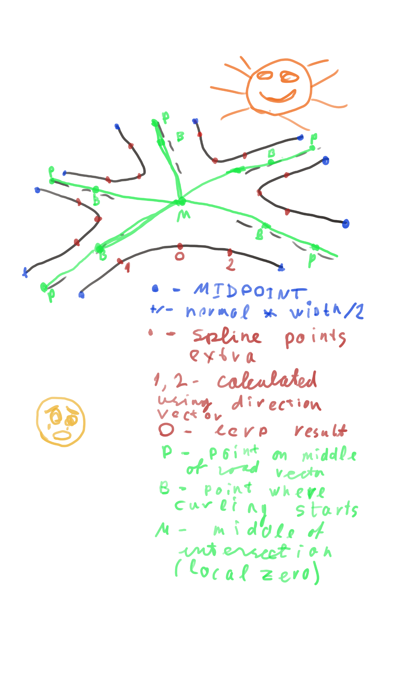

Well, with Urho a general approach is to do everything manually.
I currently work on the same thing (roadmap generation algorithm + building road mesh structure),
the code is a bit messy and unfinished, but I’d like share what I found.
The basic structure is road intersection.
We consider close half of each road to be belonging to intersection.
The center of intersection is considered (0, 0) and we use 2D vectors for all calculations at this stage. We sort roads by angle using Atan2 and split by pairs.
Example: intersecting roads ABCD. After sorting by angle CABD. Split by pairs - CA, AB, BD, DC.
For each pair we draw spline through points on outer road edge and plain lines through middle
points of roads. Also we add extra geometry for sidewalks/borderstones.
After we got 2D geometry we project it to the ground. I project all road itersection coordinates to
terrain and then smooth-out roads using Spline. And then correct the landscape to prevent it being
higher than the road. That is basic idea. Hope that helps.
Some people suggest using shader magic to build roads directly using terrain itself, but the solution is too complex and have too many limitations.
